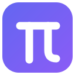
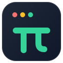

现状：线条 π 无底色（小尺寸辨识弱、深色任务栏不可见）。目标（AC-FN-29）：marketplace 彩色图标（128×128 主资产）+ 36×36 灰阶规范图标 + 活动栏单色变体。
背景切换见右上角工具条——每张图标在方格透明底 / 纯白底 / 深色底三种环境下的表现均需过关。


| 用途 | 尺寸/规格 | 来源文件 |
|---|---|---|
| Marketplace 主图标（package.json "icon"） | 128×128 PNG（SVG 导出） | ui/icon/proposal-a.svg → media/pi-icon-full.png |
| 扩展视图 / 命令面板派生 | 48 / 32 / 16 由主图标缩放 | 同一 SVG 源 |
| 活动栏 / 文件图标（contributes.icons） | 24×24 单色 SVG，stroke 用 currentColor | ui/icon/pi-mono.svg |
| 灰阶规范图标 | 36×36， 仅灰阶 #6E6E6E/#FFF | ui/icon/pi-grayscale-36.svg |
| README 头图横幅 | 按 Marketplace 规范另出（本轮范围外） | — |